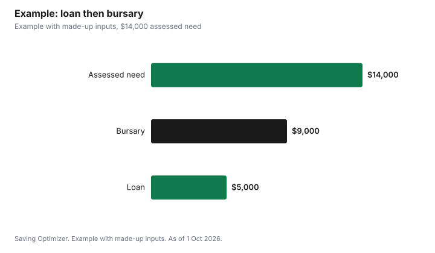

Education · Canada
Quebec AFE Loans and Bursaries: How Aide financière aux études Works
Quebec runs its own student aid through Aide financière aux études (AFE). Under the Loans and Bursaries Program for full-time studies, AFE assesses your need and gives you a loan first; if your need exceeds the loan amount set for your level of education, the rest comes as a bursary that you do not repay. The government pays the interest while you study full-time, you get six months after your studies before repayment begins, and if you received a bursary every year and finish on time, the Loan Remission Program can cut your loan by 15%. Apply each year; the school year runs from 1 September to 31 August.
Key takeaways
- Loan first; a bursary covers need above the loan amount for your level of study.
- No payments and no interest to you during full-time studies.
- Your parents' or spouse's income counts unless you are self-supporting.
- Apply each year, starting around May, and no later than 30 days after your last month of study.
- Finish on time with a bursary every year and you may get 15% off your loan.
- Example with made-up inputs: $14,000 of need becomes a $5,000 loan and a $9,000 bursary.
Who can apply
Quebec.ca says you must be a Canadian citizen, permanent resident, or have refugee or protected person status; be considered a Quebec resident; be enrolled in a recognized institution and program; be a full-time student or deemed full-time; and respect your eligibility period, which is the number of months you can receive aid, and your debt limit, which is the maximum loan you can obtain. The program covers full-time secondary-level vocational training, college and university studies. Part-time students use a separate Part-Time Education Loan Program, which provides a loan per term.
How the amount is set
AFE's assessment looks at your income, your eligible expenses, your family situation, your level of education and, depending on the case, the income of your parents, sponsor or spouse. The result is your financial need. Quebec.ca says that if your need does not exceed the loan amount established for your level of education, you receive a loan only; if it does, you also receive a bursary. You do not have to report the amount of your expenses, because they are determined automatically from your situation.
| Type | Examples |
|---|---|
| Tuition and related | Registration, admission and instructional fees, textbooks, school supplies |
| Living expenses | Housing, food, personal expenses, public transit, special transportation |
| Family | Children's living expenses, childcare, single-parent family expenses |
| Additional, on request | Medication and chiropractic costs not covered by RAMQ or insurance, prescription glasses or contacts, practicum stays, missing or inadequate public transit |
| Training support materials | $500 per term, paid as a loan, for items such as a computer |
Parent, sponsor or spouse contribution
This is the rule that most often changes the result. You are either a self-supporting student, with no parental contribution, or a student with a contribution. Your spouse's income counts if you are married or in a civil union, or if you live with someone and there is at least one child, yours or your spouse's.
| Situation |
|---|
| Single and both parents are deceased |
| Divorced, separated or widowed |
| Parent of a child, or at least 20 weeks pregnant |
| Supported yourself without living with your parents for at least 24 months, without being a full-time student |
| Worked at least 24 months without being a full-time student |
| Not studied full-time for at least 7 years since the end of compulsory education |
| At least 3 years of university in Quebec with 90 credits in the same program (45 with a major functional disability) |
| Hold a bachelor's degree from Quebec, or a Diploma of Advanced Studies I in Music |
| Full-time master's or doctoral student |
If none applies, a parent or sponsor must complete a declaration. If your parents no longer live together, only the income of the parent you live with or last lived with is considered.
Example with made-up inputs: loan then bursary
These numbers are an example with made-up inputs. They are not AFE's loan amounts. A college student's assessed need is $14,000 for the year. Suppose the loan amount set for college studies is $5,000. The student receives a $5,000 loan and a $9,000 bursary. If the same student's need were $4,000, the student would receive a $4,000 loan and no bursary. Use AFE's assessment simulator for your real figures.
| Assessed need | Loan | Bursary |
|---|---|---|
| $4,000 | $4,000 | $0 |
| $14,000 | $5,000 | $9,000 |

Deadlines
| Step | Rule |
|---|---|
| When applications open | Usually from May for the coming school year |
| School year | 1 September to 31 August |
| Latest application | Within 30 days after your last month of study in the current school year |
| Required documents | Within 45 days after your application is complete |
| Final cut-off for documents and changes | 29 December after the end of the school year |
| Renewal | Not automatic; apply for each year of study |
You need your permanent code, social insurance number, institution and program codes, and your income or an estimate for the calendar year. Tell AFE immediately about changes such as a new spouse, a birth or a change in income, since they can change your aid.
After your studies
Quebec.ca says you automatically have six months before you start repaying your loan, and during this period you can pay the interest or add it to your loan. You repay through an agreement with your financial institution, at a rate the government describes as one of the most advantageous on the market, and you can claim a non-refundable tax credit for the interest you pay.
15% loan remission
The Loan Remission Program reduces your student loan debt by 15% if you studied full-time and finished your program within the prescribed deadline. At the college technical and university undergraduate levels, you must have received a bursary in each award year of the program. Graduate and doctoral remission requires finishing on time and having received remission for your undergraduate program. You have three years after the end of your program to apply, the remission is paid to your lender, and Revenu Québec does not treat it as taxable income.
| Rule | Detail |
|---|---|
| Reduction | 15% of the loan for the program |
| Bursary requirement | A bursary in each award year of the program (college technical, undergraduate) |
| Timing | Finish within the prescribed deadline |
| How to apply | Form 1113 and your final transcript, within 3 years |
| Tax | Not taxable income for Revenu Québec |
Federal grants and Quebec
Canada.ca says the federal Canada Student Grant for Part-time Students is not available to students from Quebec, which has its own program described above. If you are a Quebec resident studying elsewhere in Canada, AFE says you can still get aid if you are considered a Quebec resident; see its studying outside Quebec page.
Steps
- Run AFE's assessment simulator with your situation.
- Decide whether you are self-supporting or need a parent, sponsor or spouse declaration.
- Apply from May, and no later than 30 days after your last month of study.
- Send documents within 45 days and request the $500 materials allowance if useful.
- Report changes in your situation immediately.
- Finish on time and apply for 15% remission within three years.
For other provinces, see StudentAid BC and OSAP 2026-27.
Sources
- Gouvernement du Québec, Loans and Bursaries for full-time studies: advantages, eligibility, assessment, allowable expenses, contribution of parents, sponsor or spouse, quebec.ca, as of 1 Oct 2026.
- Gouvernement du Québec, Complete your application for Loans and Bursaries, quebec.ca, as of 1 Oct 2026. Timing and deadlines.
- Gouvernement du Québec, Loan remission, quebec.ca, as of 1 Oct 2026. 15% reduction and eligibility.
- Gouvernement du Québec, Loans for Part-Time Studies, quebec.ca, as of 1 Oct 2026.
- Government of Canada, Canada Student Grant for Part-time Students, canada.ca (Wayback capture 16 Jun 2026), as of 1 Oct 2026. Not available to students from Quebec.
- Need and loan amounts in the example are an example with made-up inputs.
Frequently asked questions
How does Quebec's Loans and Bursaries Program work?
AFE assesses your need and gives you a loan first. If your need exceeds the loan amount set for your level of education, you also receive a bursary, which you do not repay.
Do my parents' incomes count for AFE?
Yes, unless you are self-supporting. Quebec.ca lists situations such as being a parent, working 24 months without full-time study, having 90 university credits in Quebec, holding a bachelor's degree or being a full-time graduate student.
When is the AFE application deadline?
You can usually apply from May. You must apply within 30 days after your last month of study in the school year, which runs from 1 September to 31 August, and send documents within 45 days.
When do I start repaying an AFE loan?
Six months after your full-time studies end. During that period you can pay the interest or add it to your loan.
What is AFE loan remission?
A 15% reduction of your loan if you studied full-time, finished on time and received a bursary in each award year. Apply within three years; it is not taxable income.
Can Quebec students get the Canada Student Grant?
Quebec has its own program, and canada.ca says the federal part-time grant is not available to students from Quebec.
Researched and drafted with AI assistance and fact-checked against official Canadian sources. How we create content.
Disclosure: Saving Optimizer may earn a commission if a partner link is added later, such as a student banking offer type. No partnership is claimed on this page. Education only.